2023年12月18日 14:16:08
我心态都炸了，你还特意的来搞我~
一口气换了六个Lot，我都吐了
转正资料
3. 太浪费了
佳程怎么长的那么好看呢
4. 看样子打死都不能看搬砖人的消息了，大哥又给我们安排活，自己的活都没看完呢
12320510H815
确认该OCAP为4250 GBIR单片Wafer超过产品内控SpecLine OOS 触发OA OCAP 切存在同Lot其余Wafer均值偏大
由于同Lot存在多张Wafer数据偏大，确认产品加工履历
该Lot为 DSP23 12171044生产产品 确认异常品加工期间设备状态
设备状态正常，线下测试数据形貌异常，数据恶化为斜面，GBIR数据恶化后已安排等数据，切开发转速验证Recipe生产
调试2Run后数据恢复
切SR310 后现有量产Recipe与实际Pad形貌不完全匹配，Wafer连续加工过程中形貌发生概率性恶化，导致形貌出现斜面，GBIR数据恶化，使用开发转速验证的Recipe，通过对转速的调节优化，实现GBIR优化的目的
12351490C003
确认发生OA OCAP的原因 4250 Xbar均值超过内控Spec OOS触发OA OCAP
该Lot为 DSP20 12170906生产 Logsheet 履历无明显异常 前后Run连续加工
确认Logsheet该Lots为DD后前3Run生产，DD后Pad形貌不稳定导致平坦度数据存在恶化趋势
且后半Lot平坦度相对改善与DD后调试数据改善的趋势相符合
补充Nanomap确认结果 nanomap Wafer存在轻微的来料Warp 其余无特殊明显影响平坦度的异常
咕噜咕噜咕噜
2023年12月20日 10:42:17
4250 OCAP Reason
OCAP原因及时整理，不然下班真的搞不完
12340490H813 25-24 这run是DSP32加工的，加工时修改了转速，目前两个lot都没有到4250，测完这两个lot如果有问题就返工，如果12350490G609 slot22无异常，slot1异常，就分割返工
2023年12月20日 10:58:40
DD表
调整DSP27/28 24hDD→48hDD 数据相对较好，没有BCloud
PLATINUM
200目 BY0026 水磨8H+今晚Slurry 2H 需要跟踪DD去厚和去除速率下降情况
BY0004 尝试做200#DD 盘+D，计划在27/28上选择一组数据验证，跟踪结果 @王博
DSP28 27做Ref
3P0800D 123334405809 24/24 100% Wafer存在风车状印记
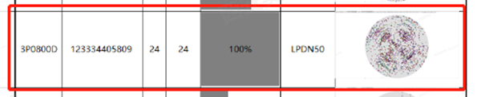
DSP38 2023/11/18 21:26 加工 Pad586Run Carrier580Run
前Lots 3P0800D 123474605812 4250
前2Lot 3P0800D 12344360B507 6400 无特殊Pattern
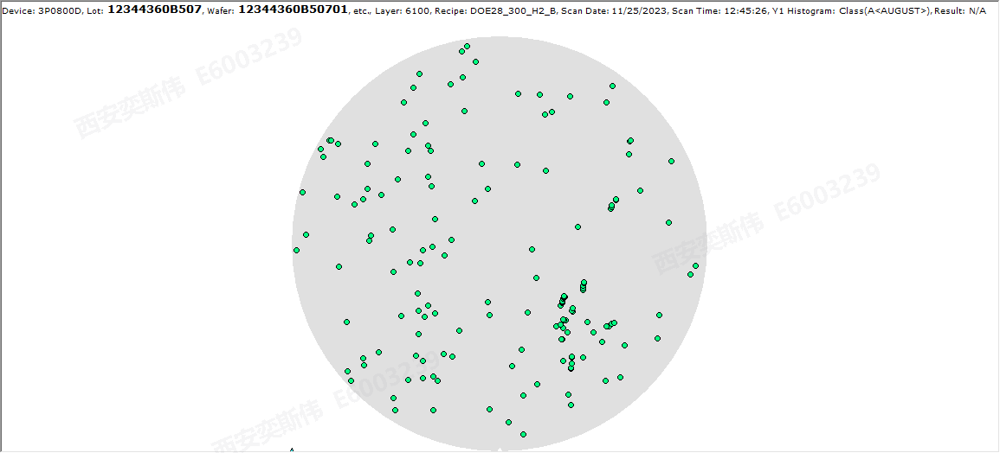
后Lots 3P0800D 123562704109 6400 无特殊Pattern
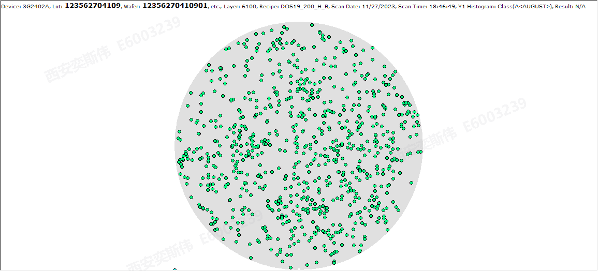
后2Lots 3P0800D 123364505815 4250
前后Lot无明显异常，判定无风险
3T0503A 12359480H601 18/24 75% Wafer表面特殊Pattern
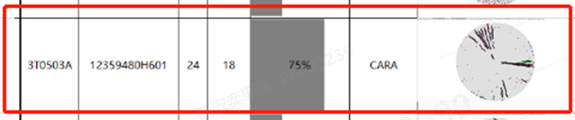
DSP22 2023/12/03 18:30 加工
前Lots 3T0503A 123015401507 存在轻微边缘集中性 单片集中于Slot07 其余无异常
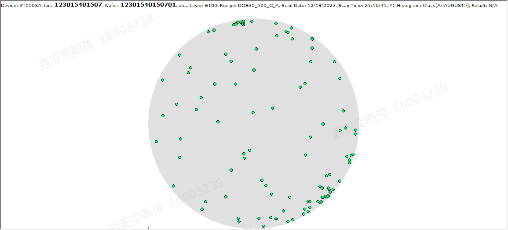
确认前2Lots 3P0800D 12341440E216 无异常
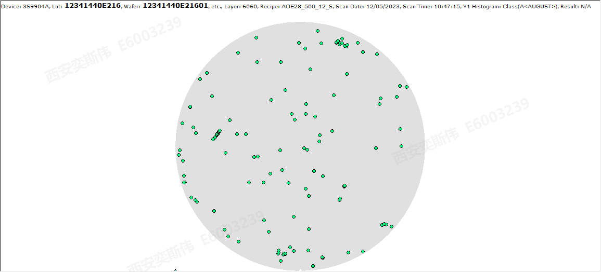
后Lots 3T0503A 123224109109 5650
后2Lots 3T0503A 12359480H611 6100
后3Lots 3H8801A 123514708814 6400 无异常
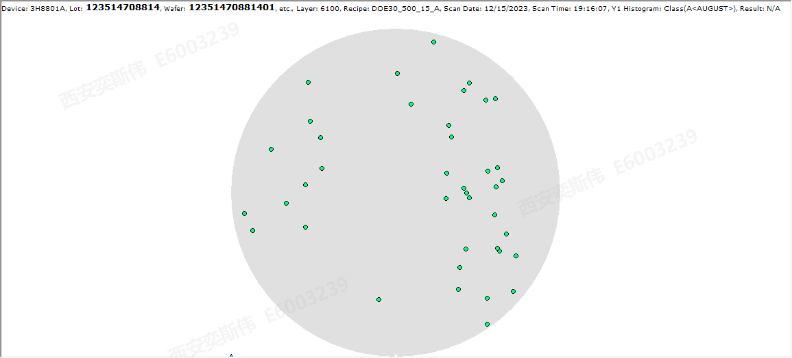
量产转速设备：06/07/09/11/12/13/18/20/21/22/24
开发转速设备：01/02/03/04/05/14/15/16/17/19/23/52
泽哥转速设备：10
量产转速设备：25/26/27/28/31/32/33/34/38/39/42/44/46
开发转速设备：29/35/36/37/40/41/45/47
泽哥转速设备：43
量产转速设备 12+14=26台 开发转速 11+7 18
123215109105
12321510D309
4251 OOS触发OA OCAP的情况还是存在，集中在3P16料号
目前2个 待确认
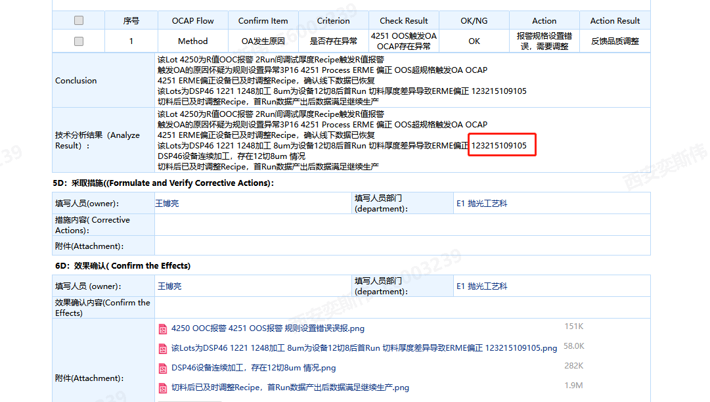
12321510D309
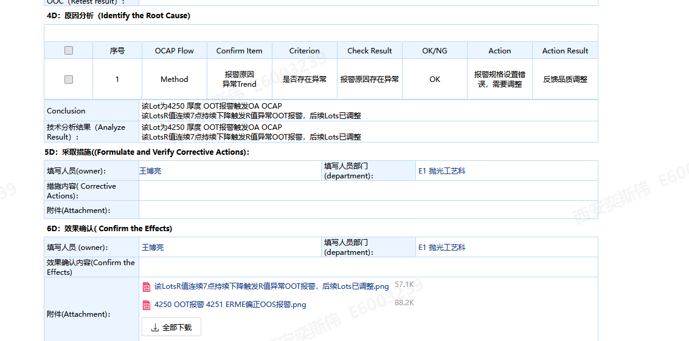
123383801918
123383801904
123383801903 厚度管控774.5
Idle 2h的Lots
123083904714 1-13
12330500H015 25-24
1234237151325
不良质量成本介绍
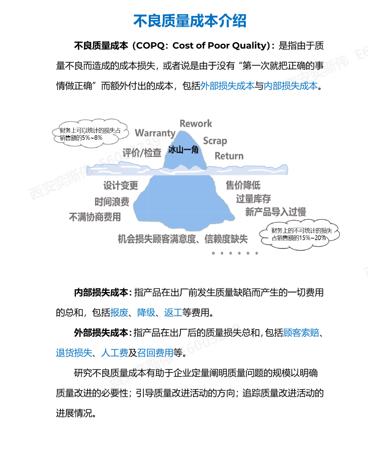
质量成本管理
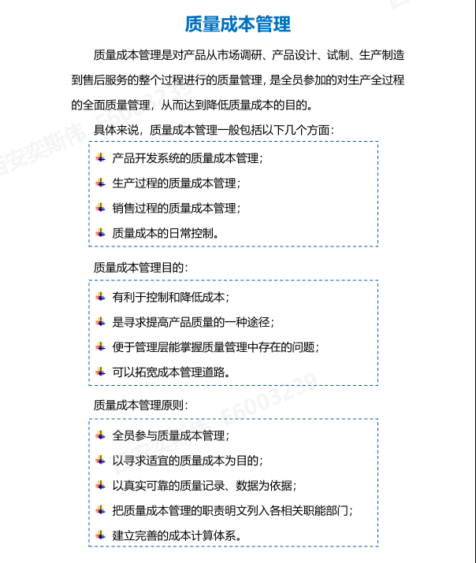
啊啊啊啊啊啊 困死我了啊
我们还能不能再见面
我在佛前苦苦求了几千年
希望可以感动上天